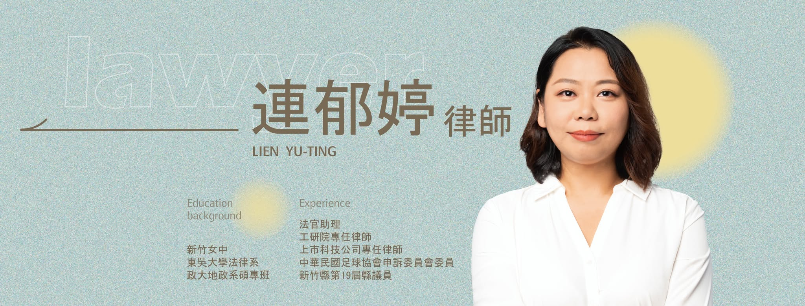

長期的「只能補休」潛規則，不僅剝奪了我們選擇加班費的權利，
更讓屆退前輩被迫休完補休，間接影響了退休金的核算基數。
我們期盼透過合法的工會力量，以理性協商取代無聲妥協。
💡 貼心提醒：為保護您的隱私，請使用個人手機網路 (4G/5G) 瀏覽本網站。
採用端對端加密系統，讓全台同仁能在不受內部壓力干擾的情況下，安心完成入會意願表達。
目標招募過半數同仁（約 1500 人），依法取得代表基層員工與公司進行《團體協約》的協商資格。
由專業律師陪同，正式要求公司修正差勤系統設定，並為屆退同仁討回依法應得的未休畢補休結算金與退休金差額。
保障勞權是一項理性的法律工程。本會籌備處深知同仁對於秋後算帳的擔憂，因此我們在起步階段，即邀請重量級專業律師加入團隊，為每一步行動提供嚴謹的法律防護網。
長期致力於勞工權益與社會正義。擔任本會義務法律顧問，除了協助審視公司規章的適法性，未來若有必要，也將代理本會啟動相關行政檢舉或協助屆退同仁進行補休結算之民事訴訟，確保基層權益不受侵害。

本會法律顧問 / 勞權專業律師
您的每一份支持，都是推動制度進步的關鍵力量。
所有資料均經海外端對端加密處理。